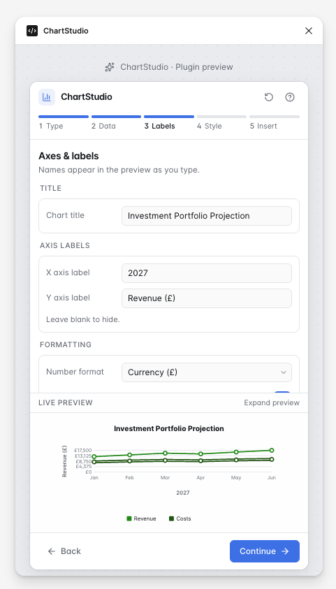
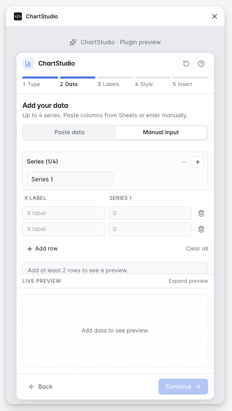

Product design case study
ChartStudio
A Figma/plugin-style concept for creating accessible, responsive chart components with reusable styling and designer-friendly controls.
ChartStudio explores how designers could create polished bar, line and doughnut charts directly in a Figma-style workflow, using responsive sizes, accessible palettes, label controls and reusable chart settings. It is positioned as a product systems concept: part data visualisation tool, part design-system component builder, with AI-assisted prototyping used to make the interaction model tangible.

Project summary
- Role
- Product design, UI systems, AI-assisted prototyping
- Tools
- Figma, AI-assisted development, GitHub, Codex
- Focus
- Data visualisation, design systems, accessibility, chart components
- Status
- Work in progress / concept prototype

The problem
Designers often need to create charts for product interfaces, dashboards and reports, but chart design becomes inconsistent when every chart is drawn manually. ChartStudio was designed as a Figma/plugin-style concept for making chart creation faster, more consistent and easier to align with shared product and accessibility standards.
Design approach

- Responsive chart sizes to support predictable layouts across desktop, tablet and mobile contexts.
- Chart type selection for bar, line and doughnut charts inside one guided plugin flow.
- Accessible colours, labels and legends that keep chart output clear and readable.
- Layout rules for spacing and alignment so chart content feels polished inside product interfaces.
- AI-assisted prototyping to turn common chart setup patterns into reusable, testable controls.
Key features
- Preset chart sizes
- Bar, line and doughnut chart options
- Legend and label controls
- Accessible visual styling
- Reusable chart component output


Screenshots
ChartStudio is a Figma/plugin-style work-in-progress concept designed to help designers create consistent, accessible and responsive charts using preset sizes, chart controls and reusable styling options. The case study flow below follows the concept from setup through to final chart insertion.
The screenshots below show the ChartStudio plugin flow, from selecting a chart type and entering data through to styling, reviewing and inserting a finished chart into Figma.



What I learned
This project helped me explore how product design, accessibility and AI-assisted development can work together. It also highlighted the importance of clear layout rules, predictable component behaviour and designer-friendly controls when creating tools for other designers.